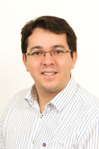

Selected Papers
Selected Tools
Selected Talks
Lucas C. Cordeiro is a Reader in the Department of Computer Science at the University of Manchester (UoM), where he leads the Systems and Software Security (S3) Research Group. Dr. Cordeiro is also the Arm Centre of Excellence Director at UoM. In addition, he is affiliated with the Trusted Digital Systems Cluster at the Centre for Digital Trust and Society, the Formal Methods Group at UoM, and the Post-Graduate Programs in Electrical Engineering (PPGEE) and Informatics (PPGI) at the Federal University of Amazonas, Brazil. Before joining the University of Manchester, he worked as a post-doctoral researcher at the University of Oxford and as a research engineer at Diffblue. In addition, Dr. Cordeiro worked for five years as a software engineer at Siemens / BenQ Mobile and CTPIM / NXP semiconductors. His work focuses on software model checking, automated testing, program synthesis, software security, embedded and cyber-physical systems. He has co-authored more than 150 peer-reviewed publications in the most prestigious venues (e.g., ICSE, CAV, TACAS, FSE, ASE, ISSTA, TSE, TR, TC). He has received various international awards, including the Most Influential Paper at ASE'23, the Distinguished Paper Award at ICSE’11, and 39 awards from the international competitions on software verification (SV-COMP) and testing (Test-Comp) 2012-2023. He has a proven track record of securing research funding from EPSRC, Intel, Motorola, Samsung, Nokia Institute of Technology, CNPq, FAPEAM, British Council, and Royal Society (career total over USD 13M). [Full CV]
Recent Papers
His list of publications can be seen from DBLP, ACM Author Profile, ArnetMiner, SCOPUS, and Google Scholar.
LinkedIn profile available here.
News (August-2022)! Will start a project on “Bounded Model Checking for Verifying and Testing Ethereum Consensus Specifications” with the Ethereum Foundation in collaboration with Dr Youcheng Sun.
News (August-2022)! Will start a project on “Using Artificial Intelligence/Machine Learning to assess source code in Escrow” with the UKRI/IAA in collaboration with Dr. Richard Allmendinger and Dr. Andre Freitas.
(Dec-2021): FuSeBMC, our white-box fuzzer for finding security vulnerabilities in programs, won first place in the Cover-Error, Cover-Branches and Overall categories at Test-Comp 2022. JBMC, our verification tool for Java Bytecode, won second place in the Java overall category at SV-COMP 2022. ESBMC, our SMT-based model checker for C/C++ programs, has successfully participated at SV-COMP 2022. It got second place in three sub-categories, third in one sub-category, fourth in the ReachSafety category, seventh place among 40 state-of-the-art software verifiers at SV-COMP 2022!
(Jun-2021): I became the new Director of the Arm Centre of Excellence at the University of Manchester.
(Dec-2020): FuSeBMC, our white-box fuzzer for finding security vulnerabilities in programs, won first place in the Cover-Error category and second place in the Overall category at Test-Comp 2021. JBMC, our verification tool for Java Bytecode, won third place in the Java overall category at SV-COMP 2021. ESBMC, our SMT-based model checker for C/C++ programs, has successfully participated at SV-COMP 2021. It got first place in one sub-category, second place in four sub-categories, fourth place in the ReachSafety category, fifth place in the SoftwareSystems category. Overall, the sixth place among 25 state-of-the-art software verifiers at SV-COMP 2021!
(Nov-2020): Will start a UKRI project on "Soteria - Demonstrating the Security Capabilities of the Morello System in the ecommerce Vertical Industrial Segment" over the call for ISCF digital security by design: technology enabled business-led demonstrator.
(August-2020): Will start an EU project on "ELEGANT: sEcure and seamLess EdGe-to-cloud ANalyTics" over the call for Software Technologies.
(Jul-2020): Will start an EPSRC project on "SCorCH: Secure Code for Capability Hardware" over the call for ISCF Digital Security by Design Research Projects.
(Feb-2020): Will start an EPSRC project on "EnnCore: End-to-End Conceptual Guarding of Neural Architectures" over the call for Security for all in an AI enabled society.
1. Using Artificial Intelligence/Machine Learning to assess source code in Escrow, UKRI Impact Acceleration Account, 2023-2024, in collaboration with Dr. Richard Allmendinger and Dr. Andre Freitas from the University of Manchester (I am the Principal Investigator).
2. Bounded Model Checking for Verifying and Testing Ethereum Consensus Specifications, Ethereum Foundation, 2023-2024, in collaboration with Dr. Youcheng Sun from the University of Manchester (I am the Co-Investigator).
3. Soteria - Demonstrating the Security Capabilities of the Morello System in the e-commerce Vertical Industrial Segment over the call for “ISCF digital security by design: technology enabled business- led demonstrator”, 2021-2024, in collaboration with Prof. Mikel Lujan, Dr. Konstantin Korovin, Dr. Giles Reger, Dr. Christos Kotselidis, Dr. Elvira Uyarra, Dr. Richard Allmendinger, and Dr. Pierre Olivier from the University of Manchester (UK) (I am the Co-Investigator).
4. ELEGANT: sEcure and seamLess EdGe-to-cloud ANalyTics, EU over the call for “Software Technologies”, 2021-2023, in collaboration with Dr. Christos Kotselidis from the University of Manchester (UK) (I am the Co-Investigator).
5. EnnCore: End-to-End Conceptual Guarding of Neural Architectures, EPSRC over the call for ``Security for all in an AI-enabled society'', 2021-2024, in collaboration with Prof. Gavin Brown, Prof. Mikel Lujan, Dr. Mustafa Mustafa, Dr. Andre Freitas from University of Manchester (UK) and Dr. Xiaowei Huang from University of Liverpool (UK) (I am the Principal Investigator).
6. SCorCH: Secure Code for Capability Hardware, EPSRC over the call for ``ISCF Digital Security by Design'', 2020-2023, in collaboration with Dr. Konstantin Korovin, Dr. Mustafa Mustafa, Dr. Olivier Pierre, and Dr. Giles Reger from University of Manchester (UK) and Prof. Daniel Kroening from University of Oxford (UK) (I am the Co-Investigator).
7. Formal Verification of Firmware, Intel Corporation, 2021-2024 (I am the Principal Investigator).
8. ARM Centre of Excellence at Manchester Arm Ltd. 2017-2021, in collaboration with Prof. Gavin Brown, Prof. Mikel Lujan, Dr. David Jackson (I am the Principal Investigator).
9. Developing Critical Mass in Cybersecurity, UK Research and Innovation -- Early Career Researchers, 2018-2020, in collaboration with Dr. Giles Reger from University of Manchester (UK) (I am the Principal Investigator).
10. Counterexample-Guided Optimization Applied to the Daily Schedule of the Electrical Power Systems using Satisfiability Modulo Theories, National Centre for Scientific and Technological Development, 2018-2021, in collaboration with Prof. Erlon Finardi from Federal University of Santa Catarina (Brazil) (I am the Principal Investigator).
11. Investigation and Development of Verification Algorithms of Embedded Software in Unmanned Aerial Vehicles using Machine Learning, Amazonas State Research Funding Agency, 2017--2018, in collaboration with Prof. Jo\~ao Edgar Chaves Filho from Federal University of Amazonas (Brazil) (I am the Co-Investigator).
12. Support for Scientific Production of the Research Group on Software and Systems Verification, Amazonas State Research Funding Agency, 2017--2018, (I am the Principal Investigator).
13. DSVerifier: A Bounded Model Checking Tool to Verify Digital Systems with Uncertainties, EPSRC Impact Acceleration Account, 2016-2017, in collaboration with Prof. Daniel Kroening from University of Oxford (UK) (I am the Co-Investigator).
14. Verification of C/C++ Programs Based on Multi-Core Processors, Nokia Institute of Technology, 2014-2016, (I am the Principal Investigator).
15. Hardware and Software Verification Based on Mathematical Induction for Embedded Systems, Amazonas State Research Funding Agency, 2014-2016, (I am the Principal Investigator).
16. SMT-based Bounded Model Checking of Multi-threaded Programs, British Council, 2014-2015, (I am the Principal Investigator).
17. Continuous Verification of C++ Programs Using SMT-based Bounded Model Checking, Nokia Institute of Technology, 2011-13, (I am the Principal Investigator).
18. SMT-Based Bounded Model Checking Timed LTL Properties for Embedded Software, Royal Society International Exchange Grant, 2011-13, in collaboration with Prof. Bernd Fischer from University of Southampton (UK) (I am the Co-Investigator).
19. Verification of Temporal Properties in Embedded Software using Satisfiability Modulo Theories, National Centre for Scientific and Technological Development, 2013-2016, (I am the Principal Investigator).
20. Research and training of human resources, at undergraduate and graduate courses, in the areas of industrial automation, software development for mobile devices, and digital TV; Samsung / Institute of Development in Informatics, 2013-2016, in collaboration with Dr. Cicero Costa, Dr. Marly Costa, Dr. Joao Chaves Filho, Dr. Vicente Lucena Jr., Dr. Andre Cavalcante, and Dr. Waldir Sabino Jr. from Federal University of Amazonas (Brazil) (I am the Co-Investigator).
Manino, E., Bessa, I., Cordeiro, L. Towards global neural network abstractions with locally-exact reconstruction. In Neural Networks, v.165, pp. 344-357, 2023. DOI
Izumi, F., Filho, E., Cordeiro, L., Maia, O., Fabricio, R., Farias, B., Silva, A. A Fuzzing-Based Test-Creation Approach for Evaluating Digital TV Receivers via Transport Streams. In Software Testing, Verification and Reliability, v32(1), pp. 1-30, 2022. DOI
Monteiro, F., Gadelha, M., Cordeiro, L. Model Checking C++ Programs. In Software Testing, Verification and Reliability, v32(1), pp. 1-30, 2022. DOI
Cavalcante, T., Bessa, I., de Lima Filho, E., Cordeiro, L. Formal Synthesis of Non-fragile State-Feedback Digital Controllers Considering Performance Requirements for Step Response. In Scientific Reports, v.12, 2022. DOI
Aljaafari, F., Menezes, R., Manino, E., Shmarov, F., Mustafa, M., Cordeiro, L. Combining BMC and Fuzzing Techniques for Finding Software Vulnerabilities in Concurrent Programs. In IEEE Access, 2022. DOI
Gadelha, M., Menezes, R., Cordeiro, L. ESBMC 6.1: Automated Test Case Generation using Bounded Model Checking. In International Journal on Software Tools for Technology Transfer, v.23(6), pp. 857-861, 2022. DOI
Alhawi, O., Rocha, H., Gadelha, M., Cordeiro, L., Batista, E. Verification and Refutation of C Programs based on k-Induction and Invariant Inference. In International Journal on Software Tools for Technology Transfer, v.23(2), pp. 115-135, 2021. DOI
de Olveira, R., Guimaraes, F., de Lucena, M., Cordeiro, L., de Lima Filho, E., de Lucena Jr., V. Hardware Update through Digital TV Signals. In Electronics v.10(24), pp. 1-20, 2021. DOI
Cavalcante, A., Bessa, I., de Lima Filho, E. Cordeiro, L. Formal Non-fragile Verification of Step Response Requirements for Digital State-Feedback Control Systems. In Journal of Control, Automation and Electrical Systems, pp. 1-21, v.31(3), 2020. DOI
Cordeiro, L. C., De Lima Filho, E. B., Bessa, I. V. A Survey on Automated Symbolic Verification and its Application for Synthesizing Cyber-Physical Systems. In IET Cyber-Physical Systems: Theory and Applications, v.5(1), pp. 1-20, 2020. DOI
Abate, A., Bessa, I., Cordeiro, L., David, C., Kesseli, P., Kroening, D., Polgreen, E. Automated Formal Synthesis of Provably Safe Digital Controllers for Continuous Plants. In Acta Informatica, v.57(1-2), pp. 223-244, 2019. DOI
Trindade, A. B. and Cordeiro, L. C. Automated Formal Verification of Stand-alone Solar Photovoltaic Systems. In Solar Energy, v.193, pp. 684-691, 2019. DOI
Chaves, L. C., Ismail, H. I., Bessa, I. V., Cordeiro, L. C., De Lima Filho, E. B. Verifying Fragility in Digital Systems with Uncertainties using DSVerifier v2.0. In Journal of Systems and Software, v.153, pp. 22-43, 2019. DOI
Farias, A. O., Queiroz, G. A. C., Bessa, I. V., Medeiro, R. L. P., Cordeiro, L. C., Palhares, R. M. Sim3Tanks: A Benchmark Model Simulator for Process Control and Monitoring. In IEEE Access, v.6, pp. 62234-62254, 2018. DOI
Chaves, L., Bessa, I., Ismail, H., Frutuoso, A., Cordeiro, L. C., de Lima Filho, E. B. DSVerifier-Aided Verification Applied to Attitude Control Software in Unmanned Aerial Vehicles. In IEEE Transactions on Reliability,v.67(4), pp. 1420-1441, 2018. DOI
Araújo, R., Ribeiro, A., Bessa, I. V., Cordeiro, L. C., Chaves Filho, J. E. Counterexample Guided Inductive Optimization based on Satisfiability Modulo Theories. In Science of Computer Programming, v.165, pp. 3-23, 2018. DOI
Monteiro, F. R., Alves, E. H., Silva, I., Ismail, H. I., Cordeiro, L. C., de Lima Filho, E. B. ESBMC-GPU: A Context-Bounded Model Checking Tool to Verify CUDA Programs.. In Science of Computer Programming, v.152, pp. 63-69, Elsevier, 2018. DOI
Sousa, F. R. M., Garcia, M. A. P., Cordeiro, L. C., Lima Filho, E. B. Bounded Model Checking of C++ Programs based on the Qt Cross-Platform Framework. In Software Testing, Verification and Reliability, v.27(3), pp. 1-24, 2017. The final is available at John Wiley via DOI.
Gadelha, M. Y. R., Ismail, H. I., Cordeiro, L. C. Handling Loops in Bounded Model Checking of C Programs via k-Induction. In International Journal on Software Tools for Technology Transfer, v.19(1), pp. 97-114, 2017. The final publication is available at Springer via DOI.
Bessa, I. V., Ismail, H. I., Palhares, R. M., Cordeiro, L. C., Chaves Filho, J. E. Formal Non-Fragile Stability Verification of Digital Control Systems with Uncertainty. In IEEE Transactions on Computers, v.66(3), pp. 545-552, 2017. The final publication is available at IEEE Xplore via DOI.
Alves, E. H. S., Cordeiro, L. C., Lima Filho, E. B. A Method to Localize Faults in Concurrent C Programs. In Journal of Software and Systems, v.132, pp. 336-352, 2017. DOI
Lucena Filho, W. C., Cordeiro, L. C., Silva Junior, W. S., Carvalho, C. B. A Power Control and Anticolision Mechanism for RFID Systems. In IEEE Latin America Transactions, v.15(10), pp. 1933-1940, 2017.
Sousa, F. R., Januario, F. A., Cordeiro, L. C., Lima Filho, E. B. BMCLua: A Translator for Model Checking Lua Programs. In Software Engineering Notes, v.42(3), pp. 1-11, ACM, 2017. DOI
Pereira, P. , Albuquerque, H., Silva, I., Marques, H., Rodrigues, F., Ferreira, R. S., Cordeiro, L. C. SMT-Based Context-Bounded Model Checking for CUDA Programs. In Concurrency and Computation: Practice and Experience, v.29(22),pp. 1-20, 2017. The final publication is available at John Wiley via DOI.
Trindade, A. B., Degelo, R. F., dos Santos, E. G., Ismail, H. I., da Silva, H. C., Cordeiro, L. C. Multi-Core Model Checking and Maximum Satisfiability Applied to Hardware-Software Partitioning. In International Journal of Embedded Systems, v.9(6), pp. 570-582, Inderscience, 2017.
Abreu, R. B., Gadelha, M. Y. R., Cordeiro, L. C., Lima Filho, E. B., Silva Jr., W. S. Bounded Model Checking for Fixed-Point Digital Filters. In Journal of The Brazilian Computer Society, v.22, n.1, pp. 1-20, 2016 via DOI.
Cordeiro, L. C. and Lima Filho, E. B. SMT-Based Context-Bounded Model Checking for Embedded Systems: Challenges and Future Trends. In Software Engineering Notes, v.41, n.3, pp. 1-6, 2016 via DOI.
Bessa, I. V., Ismail, H. I., Cordeiro, L. C., Chaves Filho, J. E. Verification of fixed-point digital controllers using direct and delta forms realizations. In Design Automation for Embedded Systems, v. 20, n. 2, pp. 95-126, 2016. The final publication is available at Springer via DOI.
Trindade, A. B. and Cordeiro, L. C. Applying SMT-based Verification to Hardware/Software Partitioning in Embedded Systems. In Design Automation for Embedded Systems, v. 20, n. 1, pp. 1-19, 2016. The final publication is available at Springer via DOI.
Morse, J, Cordeiro, L. C., Nicole, D., Fischer, B. Model Checking LTL Properties over C Programs with Bounded Traces. In Journal of Software and Systems Modeling, Springer, v. 13, n. 1, pp. 65-81, 2015 via DOI.
Morse, J., Cordeiro, L. C., Nicole, D., Fischer, B. Applying Symbolic Bounded Model Checking to the 2012 RERS Greybox Challenge. In International Journal on Software Tools for Technology Transfer, v. 16, n. 5, pp. 519-529, 2014. The final publication is available at Springer via DOI.
Rosa, R., Lucena Jr., V., Cordeiro, L. C., Chaves Filho, J. Dynamic and Automated Product Derivation for Consumer Electronics Software Applications. In IEEE Transactions on Consumer Electronics, v. 59, pp. 883-891, 2013 via DOI.
Cordeiro, L. C., Fischer, B., Marques-Silva, J. P. SMT-Based Bounded Model Checking for Embedded ANSI-C Software. In IEEE Transactions on Software Engineering, v. 38, pp. 957-974, 2012 via DOI.
Freitas, M., Valenzuela, V., Gadelha, M., SILVA JUNIOR, W. S., Cordeiro, L. C., LUCENA JUNIOR, V. A Distributed Extension of the Hybrid PRS System using Video Processing to Command a Robot via Bluetooth. In International journal of computer science and network security, v. 12, pp. 29-35, 2012 via DOI.
Cordeiro, L. C., Mar, C. A. A., Valentin, E. B., Cruz, F. T., Patrick, D. O., Barreto, R. S., Lucena Jr., V. An Agile Development Methodology Applied to Embedded Control Software under Stringent Hardware Constraints. In Software Engineering Notes, v. 33, pp. 24, 2008. DOI.
Cordeiro, L. C., Barreto, R. S., Barcelos, R. F., Oliveira, M., Lucena Jr., V., Maciel, P. TXM: An Agile HW/SW Development Methodology for Building Medical Devices. In Software Engineering Notes, v. 32, pp. 28, 2007. DOI.
Cordeiro, L. C., A.C. de Melo Junior, D.S. Paz Jr., E.C. da Paz, F.C.R Souza; J.T.D. Alkmin, A.F. Aragão, N.S. Campelo. Mapas de isorresistividades elétricas aparentes do solo superficial da cidade de Manaus. In Revista Brasileira de Geociências, 2004.
Rocha, H. O., Ismail, H. I., Cordeiro, L. C., Barreto, R. S. Model Checking Embedded C Software Using k-Induction and Invariants. In: Markus Winterholer; Djones Lettnin. (Org.). Embedded Software Verification and Debugging. 1ed.: Springer, 2017, v. 1, p. 159-182. DOI
Silvestrim, R., Trigo, F., Rocha, W., Vieira, M., Junior, J., Mendes, O.; Menezes, R., Cordeiro, L. C. Towards Integrity and Reliability in Embedded Systems: The Synergy of ESBMC and Arduino Integration. In: XIII Brazilian Symposium on Computing Systems Engineering (SBESC), 2023. p. 1-6 (to appear).
Song, K., Gadelha, M., Brausse, F., Menezes, R., Cordeiro, L. C. ESBMC v7.3: Model Checking C++ Programs using Clang AST. In: 26th Brazilian Symposium on Formal Methods (SBMF), pp. 1-8, 2023 (to appear).
Sousa, J. O.; Farias, B. C., Silva, T. A., Lima Filho, E. B., Cordeiro, L. C. LSVerifier: A BMC Approach to Identify Security Vulnerabilities in C Open-Source Software Projects. In: 23rd Brazilian Symposium on Information and Computational Systems Security (SBSeg), pp. 1-8, 2023 (to appear).
Song, X., Sun, Y., Mustafa, M. O., Cordeiro, L. C. QNNRepair: Quantized Neural Network Repair. In: 21st International Conference on Software Engineering and Formal Methods, 2023 (to appear).
Tihanyi, N., Bisztray, T., Jain, R., Ferrag, M. A., Cordeiro, L. C., Mavroeidis, V. The FormAI Dataset: Generative AI in Software Security Through the Lens of Formal Verification. In 19th International Conference on Predictive Models and Data Analytics in Software Engineering, 2023 (to appear).
Manino, E., Magri, B., Mustafa, M., Cordeiro, L. C. Certified Private Inference on Neural Networks via Lipschitz-Guided Abstraction Refinement. In 6th Workshop on Formal Methods for ML-Enabled Autonomous Systems (FoMLAS), 2023. [Presentation]
Song, X., Sun, Y., Mustafa, M., Cordeiro, L. C. AIREPAIR: A Repair Platform for Neural Networks. In 45th IEEE/ACM International Conference on Software Engineering (ICSE), pp. 98-101, 2023. [Presentation]
Aljaafari, F., Shmarov, F., Manino, E., Menezes, R., Cordeiro, L. EBF 4.2: Black-Box Cooperative Verification for Concurrent Programs (Competition Contribution). In 29th International Conference on Tools and Algorithms for the Construction and Analysis of Systems (TACAS), LNCS 13994, pp. 541-546, 2023. [Presentation] [Video]
Aldughaim, M., Alshmrany, K., Gadelha, M., de Freitas, R., Cordeiro, L. C. FuSeBMC IA: Interval Analysis and Methods for Test Case Generation (Competition Contribution). In 26th International Conference on Fundamental Approaches to Software Engineering (FASE), LNCS 13991, pp. 324-329, 2023. [Presentation] [Video]
Gervasoni, N., Lubinets, M., Jain, R., Cordeiro, L. C. MISOFuzz: A Modular Infrastructure for Scalable Fuzzing Orchestration. In 4th Workshop on Cooperative Software Verification (COOP 2023). [Presentation] [Video]
Rozanova, J., Valentino, M., Cordeiro, L., and Freitas, A. Interventional Probing in High Dimensions: An NLI Case Study. In Findings of the Association for Computational Linguistics: EACL 2023, pp. 2489–2500, 2023.
Oliveira, S. B., Conceicao, A. R. S., Lima Filho, E. B., Cordeiro, L. C. Evaluation of Ginga's CC-Web-Service Module. In IEEE International Conference on Consumer Electronics - Taiwan (ICCE-TW), IEEE, 2023 (to appear). [Poster]
Erdayandi, K., Cordeiro, L. C., Mustafa, M. O. A Privacy-Preserving and Accountable Billing Protocol for Peer-to-Peer Energy Trading Markets. In International Conference on Smart Energy Systems and Technologies (SEST), pp. 1-6, 2023 (to appear).
Manino, E., Rozana, J., Carvalho, D., Freitas, A., Cordeiro, L. C. Systematicity, Compositionality and Transitivity of Deep NLP Models: a Metamorphic Testing Perspective. In 60th Annual Meeting of the Association for Computational Linguistics (Findings of ACL), p. 2355-2366, 2022. [Presentation] [Poster] [Video]
Manino, E., Carvalho, D., Dong, Y., Rozanova, J., Song, X., Mustafa, M., Freitas, A., Brown, G., Lujan, M., Huang, X., Cordeiro, L. EnnCore: End-to-End Conceptual Guarding of Neural Architectures. In AAAI's Workshops on Artificial Intelligence Safety (SafeAI), pp. 1-8, 2022.
Alshmrany, K., Aldughaim, M., Bhayat, A., Cordeiro, L. FuSeBMC v4: Smart Seed Generation for Hybrid Fuzzing (Competition Contribution). In 24th International Conference on Fundamental Approaches to Software Engineering (FASE), LNCS 13241, pp. 336-340, 2022. [Presentation]
Song, K., Matulevicius, N., de Lima Filho, E., Cordeiro, L. C. ESBMC-Solidity: An SMT-Based Model Checker for Solidity Smart Contracts. In 44th International Conference on Software Engineering (ICSE 2022), pp. 65-69, 2022.
Monteiro, F., Gadelha, M., Cordeiro, L. C. Summary of Model Checking C++ Programs. In 15th IEEE International Conference on Software Testing, Verification and Validation (ICST), pp. 461, 2022.
Wu, T., Schrammel, P., Cordeiro, L. C. Wit4Java: A violation-witness validator for Java Verifiers (Competition Paper). In 28th International Conference on Tools and Algorithms for the Construction and Analysis of Systems (TACAS), LNCS 13244, pp. 484-0489, 2022. [Presentation] [Video]
Erdayandi, K., Paudel, A., Cordeiro, L. C., Mustafa, M. O. Privacy-Friendly Peer-to-Peer Energy Trading: A Game Theoretical Approach. In IEEE Power & Energy Society General Meeting (GM), pp. 1-6, 2022 (to appear).
Erdayandi, K., Cordeiro, L. C., Mustafa, M. O. Towards Privacy Preserving Local Energy Markets. In Competitive Advantage in the Digital Economy (CADE), pp. 127-134, 2022. DOI
Menezes, R., Moura, D., Cavalcante, H., de Freitas, H., Cordeiro, L. C. ESBMC-Jimple: Verifying Kotlin Programs via Jimple Intermediate Representation. In ACM SIGSOFT International Symposium on Software Testing and Analysis (ISSTA), pp. 777-780, 2022.
Brausse, F., Shmarov, F., Menezes, R., Gadelha, M., Korovin, K., Reger, G., Cordeiro, L. C. ESBMC-CHERI: Towards Verification of C Programs for CHERI Platforms with ESBMC. In ACM SIGSOFT International Symposium on Software Testing and Analysis (ISSTA), pp. 773-776, 2022.
Deveza, J., Santos, L., de Freitas, L., Cordeiro, L. C. Control flow graph, formal verification and constraint programming techniques . In 10th Latin American Workshop on Cliques in Graphs (LAWCG), 2022 (to appear).
Junior, M., Bessa, I., Manino, E., Song, X., Cordeiro, L. C. CEG4N: Counter-Example Guided Neural Network Quantization Refinement . In 5th Workshop on Formal Methods for ML-Enabled Autonomous Systems (FoMLAS), LNCS 13466, pp. 29-45, 2022. DOI
Alshmrany, K., Bhayat, A., Brausse, F., Cordeiro, L., Korovin, K., Melham, T., Mustafa, M., Olivier, P., Reger, G., Shmarov, F. Position Paper: Towards a Hybrid Approach to Protect Against Memory Safety Vulnerabilities. In IEEE Secure Development Conference, 2022 (to appear) [Presentation]
.Alshmrany, K., Menezes, R., Gadelha, M., Cordeiro, L. FuSeBMC: A White-Box Fuzzer for Finding Security Vulnerabilities in C Programs (Competition Contribution). In 24th International Conference on Fundamental Approaches to Software Engineering (FASE), LNCS 12649, pp. 363-367, 2021.[Presentation] [Video]
Alshmrany, K., Aldughaim, M, Bhayat, A., Cordeiro, L. FuSeBMC: An Energy-Efficient Test Generator for Finding Security Vulnerabilities in C Programs. In 15th International Conference on Tests and Proofs (TAP), LNCS 12740, pp. 85-105, 2021. [Presentation]
Li, M., Cordeiro, L. Assisted Counterexample-Guided Inductive Optimization for Robot Path Planning. In XI Brazilian Symposium on Computing Systems Engineering (SBESC), pp. 1-8, 2021. [Presentation] [Video]
Matulevicius, N., Cordeiro, L. Verifying Security Vulnerabilities for Blockchain-based Smart Contracts. In XI Brazilian Symposium on Computing Systems Engineering (SBESC), pp. 1-8, 2021. [Presentation] [Video]
Cordeiro, L. Exploiting the SAT Revolution for Automated Software Verification: Report from an Industrial Case Study. In 10th Latin-American Symposium on Dependable Computing (LADC), pp. 1-2, 2021. [Video]
Trindade, A., Cordeiro, L. Synthesis of Solar Photovoltaic Systems: Optimal Sizing Comparison. 12th Working Conference on Verified Software: Theories, Tools, and Experiments (VSTTE), LNCS 12549, pp. 87-105, 2020. [Presentation] [Video]
Gadelha, M., Cordeiro, L., Nicole, D. An Efficient Floating-Point Bit-Blasting API for Verifying C Programs. 13th International Workshop on Numerical Software Verification (NSV), LNCS 12549, pp. 178-195, 2020. [Presentation] [Video]
Rocha, H., Menezes, R., Cordeiro, L., Barreto, R. Map2Check: Using Symbolic Execution and Fuzzing (Competition Contribution) . In 26th International Conference on Tools and Algorithms for the Construction and Analysis of Systems (TACAS), LNCS 12079, pp. 403-407, 2020.
Gadelha, M., Menezes, R., Monteiro, F., Cordeiro, L., Nicole, D. ESBMC: Scalable and Precise Test-Case Generation based on the Floating-Point Theory (Competition Contribution). In 23rd International Conference on Fundamental Approaches to Software Engineering (FASE), LNCS 12076, pp. 525-529, 2020.
Valadão, M, Pereira, A., Amoedo, D., Lima Filho, E., Carvalho, C., Costa, A., Cordeiro, L., Silva Júnior, W. Classificação Automática de Modulações Utilizando Redes Neurais Artificais com Regularização Bayesiana e Algoritmo de Retropropagação de Levenberg-Marquardt. In 38th Brazilian Symposium on Telecommunications and Signal, pp. 1-5, 2020.
Sena, L., Bessa, I., Gadelha, M., Cordeiro, L., Mota, E. Incremental Bounded Model Checking of Artificial Neural Networks in CUDA. In IX Brazilian Symposium on Computing Systems Engineering (SBESC), pp. 1-8, 2019 (to appear). [Presentation]
Alhawi, O., Mustafa, M. A., Cordeiro, L. Finding Security Vulnerabilities in Unmanned Aerial Vehicles Using Software Verification. In IEEE International Workshop on Secure Internet of Things (SIOT), pp. 1-9, 2019 (to appear). [Presentation]
Monteiro, F., Gadelha, M., Cordeiro, L. Boost the Impact of Continuous Formal Verification in Industry. In 10th Workshop on Tools for Automatic Program Analysis (TAPAS), pp. 1-7, 2019 (to appear). [Presentation]
Cordeiro, L., Kroening, D., Schrammel, P. JBMC: Bounded Model Checking for Java Bytecode (Competition Contribution). In 25th International Conference on Tools and Algorithms for the Construction and Analysis of Systems (TACAS), LNCS 11429, pp. 219-223, 2019. [Presentation] [Poster]
Gadelha, M., Monteiro, F., Cordeiro, L., Nicole, D. ESBMC v6.0: Verifying C Programs using k-Induction and Invariant Inference (Competition Contribution). In 25th International Conference on Tools and Algorithms for the Construction and Analysis of Systems (TACAS), LNCS 11429, pp. 209-213, 2019.[Presentation]
Gadelha, M., Steffinlongo, E., Cordeiro, L., Fischer, B., Nicole, D. SMT-Based Refutation of Spurious Bug Reports in the Clang Static Analyzer. In 41st ACM/IEEE International Conference on Software Engineering (ICSE), pp. 11-14, 2019. [Presentation] [Poster]
Souza, P., Lima Filho, E., Cordeiro, L., Silva Júnior, W. Compressão de Sinais de Eletrocardiograma Utilizando Técnicas de Codificação Distribuída. In 37th Brazilian Symposium on Telecommunications and Signal Processing (SBrT), pp. 1-5, 2019.
Cordeiro, L., Kroening, D., Schrammel, P. Benchmarking of Java Verification Tools at the Software Verification Competition (SV-COMP) In Java PathFinder Workshop (JPF), pp. 1-5, 2018. [Presentation]
Gadelha, M., SOUSA, F., Cordeiro, L., Nicole, D. Towards Counterexample-guided k-Induction for Fast Bug Detection. In 26th ACM Joint European Software Engineering Conference and Symposium on the Foundations of Software Engineering (ESEC/FSE), pp. 765-769, 2018. [Presentation]
Monteiro, F., Garcia, M., Cordeiro, L., de Lima Filho, E. Bounded Model Checking of C++ Programs Based on the Qt Cross-Platform Framework (Journal-First Abstract). In 33rd IEEE/ACM International Conference on Automated Software Engineering (ASE), pp. 954, 2018. [Presentation]
Gadelha, M., Monteiro, F., Morse, J., Cordeiro, L., Fischer, B., Nicole, D. ESBMC 5.0: An Industrial-Strength C Model Checker. In 33rd IEEE/ACM International Conference on Automated Software Engineering (ASE), pp. 888-891, 2018. [Presentation] [Poster]
Abate, A., Bessa, I.; Cattaruzza, D., Cordeiro, L., David, C., Kesseli, P., Kroening, D., Polgreen, E. Safe, Automated and Formal Synthesis of Digital Controllers for Continuous Plants. In 7th Workshop on Synthesis (SYNT), 2018.
Cordeiro, L., Kesseli, P., Kroening, D., Schrammel, P., Trtik, M. JBMC: A Bounded Model Checking Tool for Verifying Java Bytecode. In 30th International Conference on Computer Aided Verification (CAV), LNCS 10981, pp. 183-190, 2018. [Presentation]
Chaves, L., Bessa, I. V., Cordeiro, L. C., Kroening, Daniel. DSValidator: An Automated Counterexample Reproducibility Tool for Digital Systems. In 21st ACM International Conference on Hybrid Systems: Computation and Control (HSCC), pp. 253-258, 2018. [Presentation]
Menezes, R., Rocha, H., Cordeiro, L. C., Barreto, R. S. Map2Check using LLVM and KLEE. In 24th International Conference on Tools and Algorithms for the Construction and Analysis of Systems (TACAS), LNCS 10806, pp. 437–441, 2018. [Presentation]
Gadelha, M. Y. R., Morse, J., Cordeiro, L. C., Nicole, D. Using clang as a Frontend on a Formal Verification Tool. In European LLVM Developers Meeting (EuroLLVM), pp. 1, 2018. [Poster]
Chaves, L., Bessa, I., Cordeiro, L., Kroening, D., Lima Filho, E. Verifying Digital Systems with MATLAB. In 26th ACM SIGSOFT International Symposium on Software Testing and Analysis (ISSTA), pp. 388-391. [Presentation] [Poster]
Abate, A., Bessa, I.; Cattaruzza, D., Cordeiro, L., David, C., Kesseli, P., Kroening, D., Polgreen, E. Automated Formal Synthesis of Digital Controllers for State-Space Physical Plants. In 29th International Conference on Computer-Aided Verification (CAV), LNCS 10426, pp. 462-482, 2017. [Presentation]
Abate, A., Bessa, I., Cattaruzza, D., Cordeiro, L., David, C., Kesseli, P., Kroening, D. Sound and Automated Synthesis of Digital Stabilizing Controllers for Continuous Plants. In 20th ACM International Conference on Hybrid Systems: Computation and Control (HSCC), pp. 197-206, 2017. [Presentation]
Rocha, W., Rocha, H., Ismail, H., Cordeiro, L., Fischer, B. DepthK: A k-Induction Verifier Based on Invariant Inference for C Programs. In 23th Intl. Conf. on Tools and Algorithms for the Construction and Analysis of Systems (TACAS), LNCS 10206, pp. 360-364, 2017. [Presentation]
Mello, D., Freitas, M., Cordeiro, L. C., Silva Junior, W. S., Bessa, I. V., Lima Filho, E. B., Clavier, L. Verification of Magnitude and Phase Responses in Fixed-Point Digital Filters. In 35th Brazilian Symposium on Telecommunications and Signal Processing (SBrT), pp. 1-5, 2017.
Abate, A., Bessa, I., Cattaruzza, D., Chaves, L., Cordeiro, L., David, C., Kesseli, P., Kroening, D., Polgreen, E. DSSynth: An Automated Digital Controller Synthesis Tool for Physical Plants. In 32nd IEEE/ACM International Conference on Automated Software Engineering (ASE), pp. 919-924, 2017. [Presentation] [Poster]
Araujo, R., Ribeiro, A., Bessa, I. V., Cordeiro, L. C., Chaves Filho, J. E. Counterexample Guided Inductive Optimization Applied to Mobile Robot Path Planning.. In 14rd Latin American Robotics Symposium (LARS), pp. 1-8, 2017. [Presentation]
Amoedo, D. A., Melo, W. C., Cordeiro, L. C., Lima Filho, E. B., da Silva Júnior, W. S., Carvalho, C. B. Classificação Automática de Modulações Mono e Multiportadoras utilizando Método de Extração de Características e Classificadores SVM. In 35th Brazilian Symposium on Telecommunications and Signal Processing (SBrT), pp. 1-5, 2017.
Gadelha, M. Y. R., Cordeiro, L. C., Nicole, D. Encoding floating-points using the SMT theory in ESBMC: An empirical evaluation over the SV-COMP benchmarks. In XX Brazilian Symposium on Formal Methods (SBMF), LNCS 10623, pp. 91-106, 2017. [Presentation]
Albuquerque, H., Araújo, R., Bessa, I., Cordeiro, L. C., Lima Filho, E. B. OptCE: A Counterexample-Guided Inductive Optimization Solver. In XX Brazilian Symposium on Formal Methods (SBMF), LNCS 10623, pp. 125-141, 2017. [Presentation]
Cavalcante, T., Bessa, I., Cordeiro, L. C. Planning and Evaluation of UAV Mission Planner for Intralogistics Problems. In VII Brazilian Symposium on Computing Systems Engineering (SBESC), pp. 1-8, 2017. [Presentation]
Pereira, P. A., Albuquerque, H., Marques, H., Silva, I., Carvalho, C. B., Santos, V., Ferreira, R. S., Cordeiro, L. C. Verifying CUDA Programs using SMT-Based Context-Bounded Model Checking. In ACM Symposium on Applied Computing (SAC), Software Verification and Testing, pp. 1648-1653, 2016. [Presentation]
Rocha, H. O., Cordeiro L. C., Barreto, R. S. Hunting Memory Bugs in C Programs with Map2Check (Competition Contribution). In 22th Intl. Conf. on Tools and Algorithms for the Construction and Analysis of Systems (TACAS), LNCS 9636. pp. 934-937, 2016. [Presentation]
Garcia, M. A. P., Sousa, F. R. M., Cordeiro, L. C., Lima Filho, E. B. ESBMCQtOM: A Bounded Model Checking Tool to Verify Qt Applications. In 23rd International SPIN symposium on Model Checking of Software (SPIN), LNCS 9641, pp. 97-103, 2016. [Presentation]
Pereira, P. A., Sousa, F. R., Cordeiro, L. C., Costa Filho, C. F. F., Costa, M. G. F. Complementary Training Programme for Electrical and Computer Engineering Students Through an Industrial-Academic Collaboration. In 46th Annual Frontiers in Education Conference (FIE), pp. 1-9, 2016. [Presentation]
Araujo, R., Bessa, I. V., Cordeiro, L. C., Chaves Filho, J. E. SMT-based Verification Applied to Non-convex Optimization Problems. In VI Brazilian Symposium on Computing Systems Engineering (SBESC), pp. 1-8, 2016. [Presentation]
Souza, A. S., Cordeiro, L. C., Januário, F. A. P. Verificação de Programas Multi-Threads Baseados no Framework Multiplataforma Qt. In: IV Encontro Regional de Engenharia (ENCOENG), p. 131-140, 2016.
Ismail, H. I., Bessa, I. V., Cordeiro, L. C., Chaves Filho, J. E., Lima Filho, E. B. DSVerifier: A Bounded Model Checking Tool for Digital Systems. In 22nd International SPIN Symposium on Model Checking of Software (SPIN), LNCS 9232, p. 126-131, 2015. [Presentation]
Rocha, H. O., Barreto, R. S., Cordeiro, L. C., Memory Management Test-Case Generation of C Programs using Bounded Model Checking. In 13th International Conference on Software Engineering and Formal Methods (SEFM), LNCS 9276, p. 251-267, 2015. [Presentation]
de Oliveira, R. R., Cordeiro, L. C., Lucena Jr., V. F. Hardware Reconfiguration Based on Broadcast Digital TV Signal. In IEEE International Conference on Consumer Electronics (ICCE), pp. 624-626, 2015.
Trindade, A. B., Ismail, H. I., Cordeiro, L. C. Multi-Core Model Checking to Hardware-Software Partitioning in Embedded Systems. In V Brazilian Symposium on Computing Systems Engineering (SBESC), pp. 102-105, 2015. [Presentation]
Alves, E. H. S., Cordeiro, L. C., Lima Filho, E. B. Fault Localization in Multi-Threaded C Programs using Bounded Model Checking. In V Brazilian Symposium on Computing Systems Engineering (SBESC), pp. 96-101, 2015. [Presentation]
Rocha, H., Ismail, H. I., Cordeiro, L. C., Barreto, R. S. Model Checking Embedded C Software using k-Induction and Invariants. In V Brazilian Symposium on Computing Systems Engineering (SBESC), pp. 90-95, 2015. [Presentation] (SBC Best Paper Award)
Sousa, F. R. M., Cordeiro, L. C., Lima Filho, E. B., Bounded Model Checking of C++ Programs Based on the Qt Framework. In IEEE 4th Global Conference on Consumer Electronics (GCCE), pp. 179-180, 2015. [Poster]
Pereira, P. A., Albuquerque, H., Marques, H., Silva, I., Santos, V., Carvalho, C. B., Ferreira, R. S., Cordeiro, L. C. Verificação de Kernels em Programas CUDA usando Bounded Model Checking. To appear in XV Brazilian Symposium on High-Performance Computing (WSCAD-SSC), pp. 24-35, 2015. [Presentation]
Rodrigues, F., Cordeiro, L. C., Lima Filho, E. B. Verificação de Programas C++ Baseados no Framework Multiplataforma QT. In IV Encontro Regional de Computação e Sistemas de Informação (ENCOSIS), p. 181-190, 2015. [Presentation]
Lima, M. S., Silva, E. S., Cordeiro, L. C. Verificação de Modelos Aplicada aos Filtros Espaciais em Processamento Digital de Imagens. In IV Encontro Regional de Computação e Sistemas de Informação (ENCOSIS), p. 136-145, 2015.
Bessa, I. V., Ismail, H. I., Cordeiro, L. C., Chaves Filho, J. E. Verification of Delta Form Realization in Fixed-Point Digital Controllers Using Bounded Model Checking. In IV Simpósio Brasileiro de Engenharia de Sistemas Computacionais (SBESC), pp. 49-54, 2014.
Januario, F. A. P., Cordeiro, L. C., Lima Filho, E. B. ; Lucena Jr., V. F. BMCLua: Verificação de Programas Lua em Aplicações Interativas de TV Digital. In IV Simpósio Brasileiro de Engenharia de Sistemas Computacionais (SBESC), pp. 1-6, 2014.
Trindade, A. B., Cordeiro, L. C. Aplicando Verificação de Modelos para o Particionamento de Hardware/Software. In IV Simpósio Brasileiro de Engenharia de Sistemas Computacionais, 2014, Manaus, Brasil. SBESC'14, 2014. p. 1-6.
Rosa, R. E. V. S., Cordeiro, L. C., Lucena Jr., V. F. A Secondary Screen Architecture to Accurately Capture Viewers' Interactions in an iTV Environment. In IEEE 3rd Global Conference on Consumer Electronics (GCCE), pp. 264-265, 2014. [Presentation]
Januario, F. A. P., Cordeiro, L. C., Lima Filho, E. B., Lucena Jr., V. F. BMCLua: Verification of Lua Programs in Digital TV Interactive Applications. In IEEE 3rd Global Conference on Consumer Electronics (GCCE), pp. 707-708, 2014. [Presentation]
Bessa, I., Abreu, R., Cordeiro, L. C., Chaves Filho, J. E. SMT-Based Bounded Model Checking of Fixed-Point Digital Controllers. In the 40th Annual Conference of the IEEE Industrial Electronics Society, pp. 295-301, 2014. [Presentation]
Morse, J., Ramalho, M., Cordeiro, L. C., Nicole, D. and Fischer, B. ESBMC 1.22 (Competition Contribution). In the 20th Intl. Conf. on Tools and Algorithms for the Construction and Analysis of Systems (TACAS), v. 8413, pp. 405-407, 2014. [Presentation]
Ramalho, M., Cordeiro, L. C., Cavalcante, A., Lucena Jr, V. Verificação Baseada em Indução Matemática de Programas C/C++. In the 3rd Brazilian Symposium on Computing Systems Engineering (SBESC), 2013.
Silva, V. Cordeiro, L. C., Lucena Jr, V. Verificação de Aplicações AmI Usando Java PathFinder. In the 3rd Brazilian Symposium on Computing Systems Engineering (SBESC), 2013.
Abreu, R., Cordeiro, L. C., Lima Filho, E. Verifying Fixed-Point Digital Filters using SMT-Based Bounded Model Checking. In 31st Brazilian Symposium on Telecommunications (SBrT), 2013. [e-Poster]
Januario, F., Cordeiro, L. C., Lima Filho, E. B. Verificação de Códigos Lua Utilizando BMCLua. In 31st Brazilian Symposium on Telecommunications (SBrT), 2013. [Presentation]
Freitas, M., Ramalho, M., Cordeiro, L. C., Silva Jr., W., Lima Filho, E. Verificação de Propriedades de Filtros Digitais Implementados com Aritmética de Ponto Fixo. In 31st Brazilian Symposium on Telecommunications (SBrT), 2013. [e-Poster]
Ramalho, M., Lopes, M., Rodrigues, F., Marques, H., Cordeiro, L. C., Fischer, B. SMT-Based Bounded Model Checking of C++ Programs. In 20th Intl. Conf. and Workshops on the Engineering of Computer-Based Systems (ECBS), pp. 147-156, IEEE, 2013. [Presentation]
MORSE, J., Cordeiro, L. C., NICOLE, D., Fischer, B. Handling Unbounded Loops with ESBMC 1.20 (Competition Contribution). In 19th International Conference on Tools and Algorithms for the Construction and Analysis of Systems (TACAS), v. 7795, pp. 619-622, Springer, 2013. [Presentation]
Cohen, D., Barreto, R. S., Oliveira, H., Cordeiro, L. C. A car racing based strategy for the Dynamic Voltage and Frequency Scaling technique. In 21st International Symposium on Industrial Electronics (ISIE), pp. 774-779, IEEE, 2012. [Presentation]
Cordeiro, L. C., Morse, J., Nicole, D., Fischer, B. Context-Bounded Model Checking with ESBMC 1.17. In 18th International Conference on Tools and Algorithms for the Construction and Analysis of Systems (TACAS), v.7214., pp. 533-536, Springer, 2012. [Presentation]
Lima, F. S., Cordeiro, L. C., Souza, R. C. R. Sistema de Monitoramento a Distância para Unidade de Célula a Combustível. In VIII Congresso Brasileiro de Planejamento Energético (SBPE) , 2012.
Rocha, H., Barreto, R. S., Cordeiro, L. C., Dias-Neto, A. C. Understanding Programming Bugs in ANSI-C Software Using Bounded Model Checking Counter-Examples. In 9th International Conference on Integrated Formal Methods (iFM), v.7321, pp. 128-142, Springer, 2012. [Presentation]
Caldas, R. B., Barreto, R. S., Cordeiro, L. C., Campos, S. A Formal Method for Modeling, Verification and Synthesis of Embedded Reactive Systems. In IADIS International Conference APPLIED COMPUTING (AC), pp. 379-386, 2011.
Morse, J., Cordeiro, L. C., Nicole, D., Fischer, B. Context-Bounded Model Checking of LTL Properties for ANSI-C Software. In 9th International Conference on Software Engineering and Formal Methods (SEFM), v. 7041, pp. 302-317, Springer, 2011. [Presentation]
Lucena Jr, V., Neto, J., Chaves Filho, J. E., Silva Junior, W. S., Cordeiro, L. C. Gift Young Engineers: An Extra-Curricular Initiative for Updating Computer and Electrical Engineering Courses. In 41st ASEE/IEEE Frontiers in Education Conference (FIE), pp. 1-6, IEEE, 2011.
Barreto, R. S., Cordeiro, L. C., Fischer, B. Verifying Embedded C Software with Timing Constraints using an Untimed Model Checker. In Brazilian Symposium on Computing System Engineering (SBESC), pp. 89-100, IEEE, 2011. [Presentation]
Cordeiro, L. C., Fischer, B. Verifying Multi-threaded Software using SMT-based Context-Bounded Model Checking. In ACM/IEEE 33rd International Conference on Software Engineering (ICSE), pp.331-340, IEEE/ACM, 2011. [Presentation] (ACM SIGSOFT Distinguished Paper Award)
Cordeiro, L. C., Fischer, B. Bounded Model Checking of Multi-threaded Software using SMT solvers. In 8th International Workshop on Satisfiability Modulo Theories (SMT), 2010. [Presentation]
Cordeiro, L. C., Fischer, B., Marques-Silva, J. P. Continuous Verification of Large Embedded Software using SMT-Based Bounded Model Checking. In 17th International Conference and Workshops on Engineering of Computer-Based Systems (ECBS), pp. 160-169, IEEE, 2010.
Rocha, H., Cordeiro, L. C., Barreto, R. S., Netto, José. Exploiting Safety Properties in Bounded Model Checking for Test Cases Generation of C Programs. In 4th Brazilian Workshop on Systematic and Automated Software Testing (SAST), pp. 121-130, 2010.
Cordeiro, L C. SMT-Based Bounded Model Checking for Multi-threaded Software in Embedded Systems. In ACM/IEEE 32nd International Conference on Software Engineering (ICSE), Doctoral Symposium, v.2. pp. 373-376, IEEE/ACM, 2010.[Presentation]
Cordeiro, L. C., Fischer, B., Chen, H., Marques-Silva, J. P. Semiformal Verification of Embedded Software in Medical Devices Considering Stringent Hardware Constraints. In 6th International Conference on Embedded Software and Systems (ICESS), pp. 396-403, IEEE, 2009. [Presentation]
Cordeiro, L. C., Fischer, B., Marques-Silva, J. P. SMT-Based Bounded Model Checking for Embedded ANSI-C Software. In 24th IEEE/ACM International Conference on Automated Software Engineering (ASE), pp. 137-148, 2009.
Cordeiro, L. C., Mar, C. A. A., Valentin, E. B., Cruz, F. T., Patrick, D. O., Barreto, R. S., Lucena Junior, V. A Platform-Based Software Design Methodology for Embedded Control Systems: An Agile Toolkit. In Proceedings of the Agility in the Software Process Workshop of the 15th Annual IEEE International Conference and Workshops on the Engineering of Computer Based Systems (ECBS), pp.408 - 417, IEEE, 2008.
Cruz, F. T., Barreto, R. S., Cordeiro, L. C., Maciel, P. ezRealtime: A Domain-Specific Modeling Tool for Embedded Hard Real-Time Software Synthesis. In Design, Automation and Test in Europe (DATE), pp. 1510-1515, 2008.
Teófilo, M., Cordeiro, L. C., Barreto, R. S., Pereira, J. R. Mandos: A User Interaction Method in Embedded Applications for Mobile Telephony. In 1st International Conference on Advances in Computer-Human Interaction, (ACHI), pp. 271-276, IEEE, 2008.
Cruz, F. T., BARRETO, R. S., Cordeiro, L. C., MACIEL, P. Towards a Model-Driven Engineering Approach for Developing Embedded Hard Real-Time Software. In 23rd ACM Symposium on Applied Computing, Real-Time Systems Track (SAC RTS) pp. 308-314, 2008. (ACM SIGAPP Best Paper Award)
Cordeiro, L. C., Barreto, R. S., Oliveira, M. Towards a Semiformal Development Methodology for Embedded Systems. In 3rd Intenational Conference on Evaluation of Novel Approaches to Software Engineering (ENASE), pp. 5-12, INSTICC, 2008.
Cordeiro, L. C., Barreto, R. S., Barcelos, R. F., Oliveira, M., Lucena Junior, V., Maciel, P. Agile Development Methodology for Embedded Systems: A Platform-Based Desing Approach. In 14th International Conference and Workshop on the Engineering of Computer Based Systems (ECBS), pp. 195 - 202, IEEE, 2007.
Cordeiro, L. C., Becker, C. O., Barreto, R. S. Applying Scrum and Organizational Patterns to Multi Site Software Development. In 6th Latin American Conference on Pattern Languages of Programming (SugarLoafPlop), pp. 46 - 67, SBC, 2007.
Cordeiro, L. C., Louzado, D. A. Aplicando Padrões de Gerência de Configuração de Software em Projetos Geograficamente Distribuídos. In 5º Conferência Latino-Americana em Linguagem de Padrões para Programação (SugarLoafPlop), Pattern Applications, p.207 - 221, SBC, 2005. [Presentation]
J.T.D. Alkmin, A.C. de Melo Junior, E.C. da Paz, N.S. Campelo, F.C.R Souza, Cordeiro, L. C., Carvalho, J. S., A.F. Aragão. Comparação entre mapas de isorresistividades elétricas aparentes do solo superficial de Manaus, a partir de séries de dados completos e estatísticos. In I Simpósio Regional da Sociedade Brasileira de Geofísica (SBGf), 2004.
J.T.D. Alkmin, A.C. de Melo Junior, F.C.R Souza, N.S. Campelo, Cordeiro, L. C., E.C. da Paz, A.F. Aragão. Malhas de Aterramento do Sistema Elétrico da Manaus Energia: um Estudo de Caso. In II Congresso de Inovação Tecnológica em Energia Elétrica, 2003, Salvador. II Congresso de Inovação Tecnológica em Energia Elétrica, 2003.
Cordeiro, L. C. SMT-Based Bounded Model Checking of Multi-threaded Software in Embedded Systems. Ph.D. Thesis, University of Southampton, 2011. [Presentation]
Cordeiro, L. C. TXM - Uma Metodologia de Desenvolvimento de HW/SW Ágil para Sistemas Embarcados. M.Sc. Thesis, Federal University of Amazonas, 2007. [Presentation]
Cordeiro, L. C. Developing Real-Time Applications with LEGO Mindstorms. B.Sc. Thesis, Federal University of Amazonas, 2004.
1. Alshmrany, K. M. Efficient Hybrid Fuzzing for Detecting Vulnerabilities and Achieving High Coverage in Software. In: Ph.D. in Computer Science, University of Manchester, 2023 (Supervisor).
2. Trindade, A. B. Automated Verification of Stand-alone Solar Photovoltaic Systems. In: D.Sc. in Informatics, Federal University of Amazonas, 2020 (Supervisor).
3. Rocha, H. O. Verificação de Sistemas de Software baseada em Transformações de Código usando Bounded Model Checking. In: D.Sc. in Informatics, Federal University of Amazonas, 2015 (co-supervisor).
1. Hong. H. Verifying Quantized Neural Networks using SMT-Based Model Checking. In: M.Sc. in Advanced Computer Science, University of Manchester, 2023 (Supervisor).
2. Li, x. Safety Verification of CUDA and Deep Neural Networks. In: M.Sc. in Advanced Computer Science, University of Manchester, 2023 (Supervisor).
3. Cheng, Z. Develop and Evaluate a Security Analyzer for Finding Vulnerabilities in Java programs. In: M.Sc. in Advanced Computer Science, University of Manchester, 2023 (Supervisor).
4. Zhou, Z. The ESBMC-based Approach to Security Verification in Linux Kernel Programs. In: M.Sc. in Advanced Computer Science, University of Manchester, 2023 (Supervisor).
5. Salim, B. ESBMC-based Ethereum Smart Contract Security Verification. In: M.Sc. in Advanced Computer Science, University of Manchester, 2022 (Supervisor).
6. Wu, C. Fuzzing a Software Verifier. In: M.Sc. in Advanced Computer Science, University of Manchester, 2022 (Supervisor).
7. Li, M. Incremental Bounded Model Checking using Machine Learning Techniques. In: M.Sc. in Advanced Computer Science, University of Manchester, 2022 (Supervisor).
8. Young, J. Verifying Binarised Neural Networks using SMT-Based Model Checking. In: M.Sc. in Advanced Computer Science, University of Manchester, 2022 (Supervisor).
9. Lu, Y. Scaling up Bounded-Model-Checking for Internet of Things devices. In: M.Sc. in Advanced Computer Science, University of Manchester, 2022 (Supervisor).
10. Sena, L. H. C. Automated Verification and Refutation of Quantized Neural Networks. In: M.Sc. in Electrical Engineering, Federal University of Amazonas, 2022 (Supervisor).
11. He, H. Incremental Bounded Model Checking using Machine Learning Techniques. In: M.Sc. in Advanced Computer Science, University of Manchester, 2021 (Supervisor).
12. Wang, S. Develop and Evaluate a Security Analyzer for Finding Vulnerabilities in Java programs. In: M.Sc. in Advanced Computer Science, University of Manchester, 2021 (Supervisor).
13. Wu, T. Develop and Evaluate a Security Analyzer for Finding Vulnerabilities in Java programs. In: M.Sc. in Advanced Computer Science, University of Manchester, 2021 (Supervisor).
14. Song, K. SMT-Based Bounded Model Checking for Solidity Smart Contracts. In: M.Sc. in Advanced Computer Science, University of Manchester, 2021 (Supervisor).
15. Matulevicius, N. Verifying Information Flow Security for Blockchain-based Smart Contracts. In: M.Sc. in Advanced Computer Science, University of Manchester, 2021 (Supervisor).
16. Menezes, R. S. Geração de Casos de Teste Usando Bounded Model Checking. In: M.Sc. in Electrical Engineering, Federal University of Amazonas, 2020 (supervisor).
17. Alhawi, O. Finding Software Vulnerabilities in Unmanned Aerial Vehicles Using Software Verification. In: M.Phil. in Computer Science, University of Manchester, 2021 (Supervisor).
18. Tan, V. L. Security Analyser Tool for Finding Vulnerabilities in Java Programs. In: M.Sc. in Advanced Computer Science, University of Manchester, 2020 (Supervisor).
19. Monteiro, F. R. Formal Verification to Ensuring the Memory Safety of C++ Programs. In: M.Sc. in Electrical Engineering, Federal University of Amazonas, 2020 (supervisor).
20. de Souza, A. S. Verificação de Programas Multi-Tarefas Baseado no Framework Multiplataforma QT. In: M.Sc. in Electrical Engineering, Federal University of Amazonas, 2019 (supervisor).
21. Alkhamissi, S. R. Finding Software Vulnerabilities in Unmanned Aerial Vehicles. In: M.Sc. in Advanced Computer Science, University of Manchester, 2019 (Supervisor).
22. Cavalcante, T. R. F. Verificação e Síntese de Controladores de Realimentação de Estados Estática com Garantias Formais de Desempenho Não Frágil. In: M.Sc. in Electrical Engineering, Federal University of Amazonas, 2019 (co-supervisor).
23. Albuquerque, H. F. Uma abordagem de otimização guiada por contra-exemplos usando solucionadores SAT e SMT. In: M.Sc. in Electrical Engineering, Federal University of Amazonas, 2019 (supervisor).
24. Pereira, P. A. Verificação Limitada de Modelos Baseada em SMT para Programas CUDA. In: M.Sc. in Electrical Engineering, Federal University of Amazonas, 2019 (supervisor).
25. Alves, E. H. S. Localização de Falhas em Programas Concorrentes em C. In: M.Sc. in Electrical Engineering, Federal University of Amazonas, 2018 (co-supervisor).
26. Chaves, L. C. Formal Verification Applied to Attitude Control Software of Unmanned Aerial Vehicles. In: M.Sc. in Electrical Engineering, Federal University of Amazonas, 2018 (supervisor).
27. de Melo, R. W. R. Verificação de Programas Embarcados ANSI-C Baseada em Indução Matemática e Invariantes.. In: M.Sc. in Electrical Engineering, Federal University of Amazonas, 2017 (supervisor).
28. Garcia, M. A. P. Verificação de Programas C++ Baseados no Framework Cross-Platform Qt. In: M.Sc. in Electrical Engineering, Federal University of Amazonas, 2016 (supervisor).
29. Ismail, H. I. Verificação de Modelos Aplicada ao Projeto de Controladores Digitais Implementados em Processadores de Ponto-Fixo. In: M.Sc. in Electrical Engineering, Federal University of Amazonas, 2015 (supervisor).
30. Januário, F. A. P. BMCLua: Metodologia para Verificação de Códigos Lua Utilizando Bounded Model Checking. In: M.Sc. in Electrical Engineering, Federal University of Amazonas, 2015 (supervisor).
31. Trindade, A. B. Aplicando Verificação Formal Baseada nas Teorias do Módulo da Satisfabilidade para o Particionamento de Hardware/Software em Sistemas Embarcados. In: M.Sc. in Electrical Engineering, Federal University of Amazonas, 2015 (supervisor). [Resumo]
32. Abreu, R. B. Avaliação de Projetos de Filtros Digitais de Ponto-Fixo usando Teorias do Módulo da Satisfatibilidade. In: M.Sc. in Electrical Engineering , Federal University of Amazonas, 2014 (supervisor).
33. Gadelha, M. Y. R. Verificação Baseada em Indução Matemática para Programas C++. In: M.Sc. in Electrical Engineering, Federal University of Amazonas, 2013 (supervisor).
1. Moura, D. Investigando as Relações Entre Problemas de Segurança de Memória e Desempenho em Programas Kotlin. In: B.Sc. in Electrical Engineering, Federal University of Amazonas, 2023 (supervisor).
2. Gotkowicz, M. Grammar-Aware MQTT Fuzzing. In: B.Sc. in Computer Science, University of Manchester, 2022 (supervisor).
3. Lu, W. Verifying Python Programs in Robotic Applications. In: B.Sc. in Computer Science, University of Manchester, 2022 (supervisor).
4. Li, M. Counterexample-Guided Optimisation Applied to Mobile Robot Path Planning. In: B.Sc. in Computer Science, University of Manchester, 2021 (supervisor).
5. Kung, Y. S. Counterexample Guided Inductive Optimisation. In: B.Sc. in Computer Science, University of Manchester, 2020 (supervisor).
6. Balan, A. C. A Security Analyser for Finding Vulnerabilities in C Programs. In: B.Sc. in Computer Science, University of Manchester, 2020 (supervisor).
7. Mihai, L. Counterexample-Guided Optimisation Applied to Mobile Robot Path Planning. In: B.Sc. in Computer Science, University of Manchester, 2020 (supervisor).
8. Chitoraga, D. Assisted Counterexample Guided Optimisation. In: B.Sc. in Artificial Intelligence, University of Manchester, 2019 (supervisor).
9. Albuquerque, H. F. Modelo Operacional CUDA para Verificação de Programas. In: B.Eng. in Computer Engineering, Federal University of Amazonas, 2016 (supervisor).
10. Sousa, F. R., Verificação de Controladores Digitais de Ponto Fixo Representados por Espaço de Estados. In: Institutional Scientific Initiation Program, Federal University of Amazonas, 2015 (supervisor).
11. Pereira, P. A. Desenvolvimento de um Modelo em VHDL para Avaliação de Corretude e Desempenho do Processador MIPS usando Arquiteturas Baseadas em Multiciclo e Pipeline. In: B.Eng. in Computer Engineering, Federal University of Amazonas, 2015 (supervisor).
12. Alves, E. H. S. Um Método para Localizar Falhas em Software Concorrente em C. In: B.Eng. in Computer Engineering, Federal University of Amazonas, 2015 (supervisor).
13. Sousa, F. R. Verificação de Programas C++ que Usam o Framework Multiplataforma QT. In: Institutional Scientific Initiation Program, Federal University of Amazonas, 2013 (supervisor).